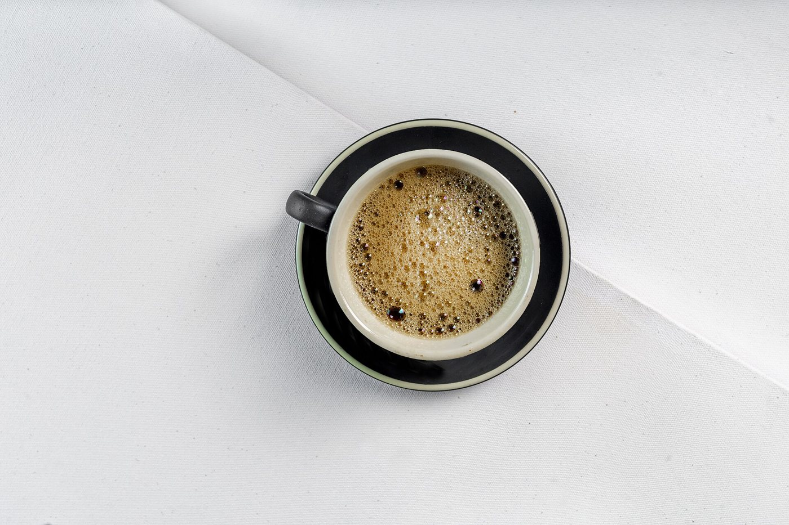
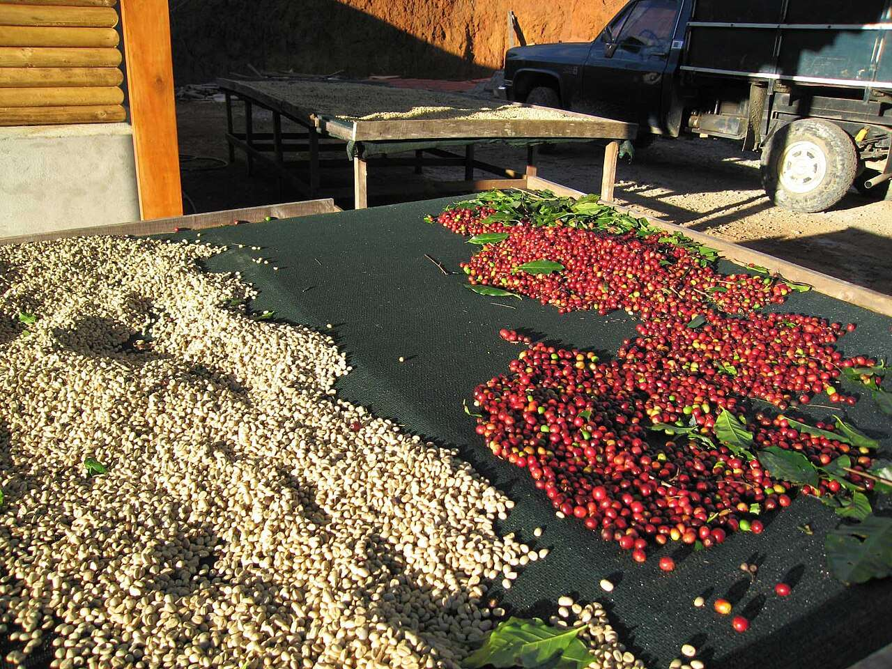

制作側の連想
真空ポンプの部位を、配置図にしてみる
このサイトは、空気を抜く機械の断面を図にして作りました。六つの部位に番号をふり、上の図と並べています。制作側の連想で、お店の理念・由来とは無関係です。実際の真空ポンプの仕様を示すものでもありません。
凡例
六つの部位
- 1吸気口空気を吸い込む、ポンプの入口になる部分。
- 2ローターケースの中で、中心をずらして回る円筒。
- 3ベーンローターの溝を出入りして、空間を仕切る羽根板。
- 4排気口押し出された空気を外へ逃がす出口。
- 5オイルタンク密封と潤滑に使う油をためておく容器。
- 6モーターローターを回すための動力部。
ギャラリー(イメージ)
コーヒーとパンの写真


写真はコーヒーやパンのイメージです。お店のものではなく、お店で提供している商品を示すものでもありません。
ご案内
お店のこと(確認できたものだけ)
| 所在地 | 〒871-0058 大分県中津市豊田町1-14 |
|---|---|
| 電話 | 準備中 |
| 営業時間 | 準備中 |
| 定休日 | 準備中 |
| ご予約 | 準備中 |
| 駐車場 | 準備中 |
| SNS | Instagram @oncloud_9nine |